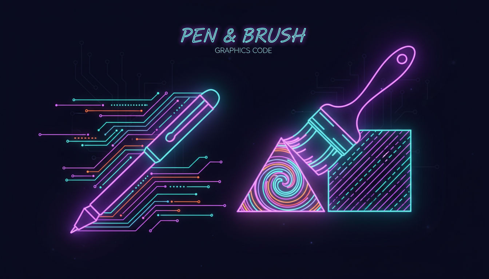

Стилі ліній, градієнти, текстури

// Різні стилі Pen
Pen^ solidPen = gcnew Pen(Color::Cyan, 3);
// Пунктирна лінія
Pen^ dashPen = gcnew Pen(Color::Magenta, 2);
dashPen->DashStyle = Drawing2D::DashStyle::DashDot;
// Лінія зі стрілкою
Pen^ arrowPen = gcnew Pen(Color::Yellow, 2);
arrowPen->EndCap = Drawing2D::LineCap::ArrowAnchor;
// Малювання
Graphics^ g = this->CreateGraphics();
g->DrawLine(solidPen, 10, 10, 200, 10);
g->DrawLine(dashPen, 10, 30, 200, 30);
g->DrawLine(arrowPen, 10, 50, 200, 50);// Сплошна заливка
SolidBrush^ solid = gcnew SolidBrush(Color::Blue);
// Градієнт
LinearGradientBrush^ gradient = gcnew LinearGradientBrush(
Rectangle(0, 0, 200, 100),
Color::Blue, Color::Purple,
LinearGradientMode::Horizontal);
// Штриховка
HatchBrush^ hatch = gcnew HatchBrush(
HatchStyle::DiagonalCross,
Color::White, Color::DarkBlue);
g->FillRectangle(gradient, 10, 100, 200, 80);
g->FillEllipse(hatch, 250, 100, 150, 80);